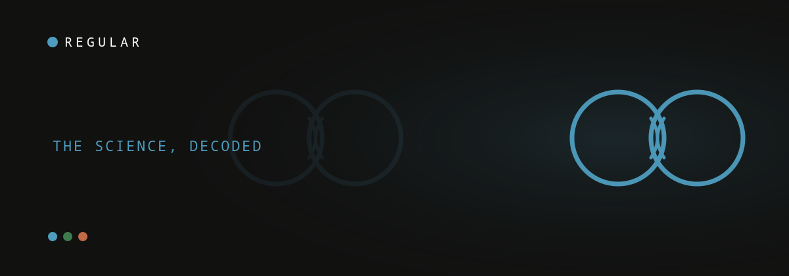

 IY
IYA note from Ivan — I’m a professor working on AI and a dad of one. For “The Science, decoded” I read the primary study myself, so every number here traces back to a real, citable source. Why trust us.
Yes — your bond with your partner and your bond with your baby are tightly linked. A 2025 national study of 1,600 fathers found that coparenting quality, a dad's depression symptoms, and his bond with his baby all move together, each one feeding the others (Mumin et al., Journal of Affective Disorders, 2025). It's correlation, not proof of cause — but the practical takeaway is simple: working on the couple isn't separate from being a good dad.
Here's a question almost no new dad thinks to ask: when things feel off between you and your partner, is that bleaking into how close you feel to your kid? A large, fresh study just put numbers on it — and the answer reframes what "working on your relationship" even means.
What the 2025 study actually found
The study found that a father's depression symptoms, the quality of the coparenting relationship, and the father-infant bond are bidirectionally associated — they rise and fall together, in both directions. In a sample of 1,600 fathers, stronger coparenting went with a stronger bond, and depression symptoms went with a weaker one.
Researchers surveyed 1,600 fathers of children aged 0–24 months across Sweden, using three validated tools: the Edinburgh Postnatal Depression Scale for mood, the Brief Coparenting Relationship Scale for how the parents functioned as a team, and the Postpartum Bonding Questionnaire for the father-infant bond. About 22% of those fathers reported depression symptoms — a sobering reminder that struggling dads are common, not rare.
| Title | Paternal depression, coparenting, and father–infant bonding in Sweden during COVID-19: A national cross-sectional study |
| Journal | Journal of Affective Disorders (2025) |
| Sample | 1,600 fathers of children aged 0–24 months |
| Design | National cross-sectional survey (EPDS, Brief Coparenting Relationship Scale, Postpartum Bonding Questionnaire) |
| Headline finding | Depression symptoms, coparenting quality, and father-infant bonding are bidirectionally associated |
One important caveat, stated plainly: this is a cross-sectional study, so it shows these things travel together, not that one causes another. But the association is strong, it's large, and it lines up with decades of earlier work.
Why this matters more for dads than it sounds
It matters because dads are usually told to "help more," not "connect more" — yet the data ties a father's bond with his child to his mood and his partnership, not his chore count. The couple relationship turns out to be load-bearing for the whole family, including the part where you feel close to your kid.
This connects to something older and well-established: about 67% of couples report a decline in relationship satisfaction in the first three years after a baby (Shapiro, Gottman & Carrere, 2000). The 2025 study adds a crucial layer — that decline doesn't just sit between the partners. It's entangled with how a dad feels and how he bonds. And when dads withdraw, the cost is real.
"Feeling isolated and like you have to work things out on your own and not ask for help is a uniquely male view that can lead to numbness and detachment."Raymond Levy, PsyD, Harvard Medical School / Massachusetts General Hospital (Fatherly)
of the 1,600 fathers reported depression symptoms — higher than the usual ~10% baseline for paternal postpartum depression (Paulson & Bazemore, 2010), reflecting a pandemic-era sample, but a clear sign that paternal mental health is common and consequential.
Two myths this study quietly busts
The data undercuts two common beliefs: that the couple relationship and the parent-child bond are separate projects, and that a dad's mood is his private problem. The study shows all three are one interconnected system — move one, and the others move with it.
| The myth | What the 2025 data suggests |
|---|---|
| "Focus on the baby now; fix the marriage later." | Bond and partnership move together — postponing one weakens the other. |
| "My low mood is my own private thing." | A dad's depression symptoms track with both the bond and the coparenting team. |
| "Being a good dad means doing more tasks." | Bonding is tied to connection and mood, not chore volume. |
| "If I just push through, it'll sort itself out." | These factors reinforce each other; a small, deliberate nudge to any one of them can lift the rest. |
What it means for you tonight
Because the three factors lift each other, you don't need a grand plan — you need one small move in each lane. Spend five minutes connecting with your partner as a couple, and ten minutes one-on-one with your baby. Small, repeated, in both lanes: that's the whole intervention the science supports.
- One couple move. A five-minute check-in with your partner that isn't logistics and isn't the baby — just "how are you, actually." Strengthening the team is the lever the study highlights.
- One baby move. Ten minutes of solo time that's yours — bath, a walk, bedtime. Direct one-on-one contact is how the bond gets built, not borrowed.
- One honesty move. If your own mood has been flat for a couple of weeks — the kind of quiet loneliness many new dads sit in — say so to someone — your partner, a friend, or a professional. Naming it is the first step the research keeps pointing back to.
Frequently asked questions
Does my relationship with my partner affect how I bond with my baby?
The evidence says they're closely linked. A 2025 national study of 1,600 fathers in Sweden found that the quality of the coparenting relationship and a father's bond with his baby move together — better teamwork between parents was associated with a stronger father-infant bond (Mumin et al., Journal of Affective Disorders, 2025). It's a correlation, not proof of cause, but the pattern is strong and consistent.
How common are depression symptoms in new fathers?
More common than most people assume. In the 2025 Swedish study, about 22% of 1,600 fathers reported depression symptoms, and a broad JAMA meta-analysis puts paternal postpartum depression at around 10.4% (Paulson & Bazemore, 2010). The 2025 figure is higher partly because it was collected during the COVID-19 pandemic, but both numbers show paternal mental health is far from rare.
Does being a better partner make me a better dad?
The research points that way. Because coparenting quality, a father's mood, and the father-infant bond are bidirectionally associated, strengthening how you and your partner work as a team is linked to a stronger bond with your child. Investing in the couple isn't separate from parenting — it appears to be upstream of it.
What does "bidirectional association" actually mean here?
It means the factors influence each other in both directions rather than one simply causing the other. A weaker bond and lower mood can drag down coparenting, and strained coparenting can weaken the bond and mood. Practically, it means there's no single root cause to fix — but improving any one of them can lift the others.
What can I do tonight with this research?
Pick one small move in the couple lane and one in the baby lane: a five-minute check-in with your partner that isn't about logistics, and ten minutes of solo time with your baby. A daily tool like Regular hands you the couple-side prompt so the teamwork the study highlights becomes a nightly habit instead of a someday plan.
Keep readingLonely as a new dad? Why it happens and what helps · Dead bedroom after baby: what's normal and what helps · How relationships actually work after a baby
Co-founder & CPO of Regular; Prof. Dr. in AI and institute director at THWS Würzburg. Writes “The Science, decoded” — reading the primary research so every claim traces to a citable source.
About Regular — the relationship app for new dads, built by a small team of parents who needed it themselves. Small, science-backed moves with your partner, not big talks.